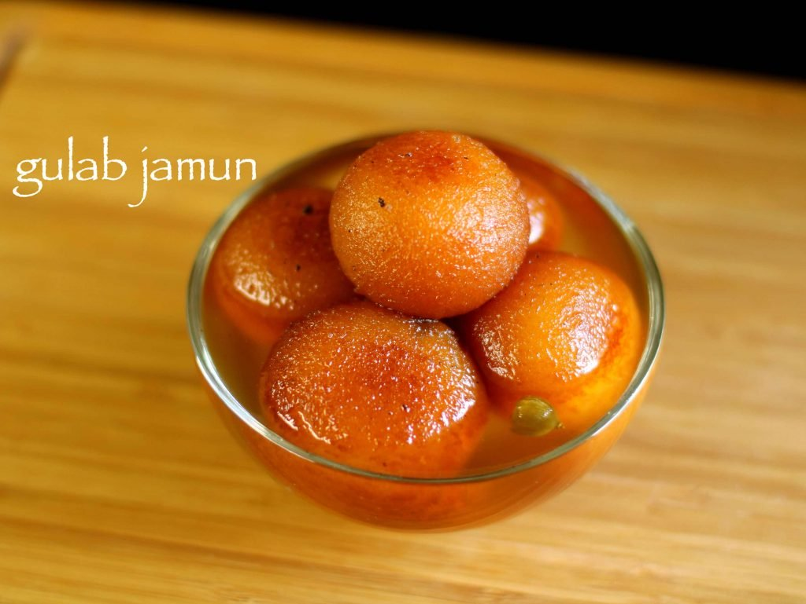
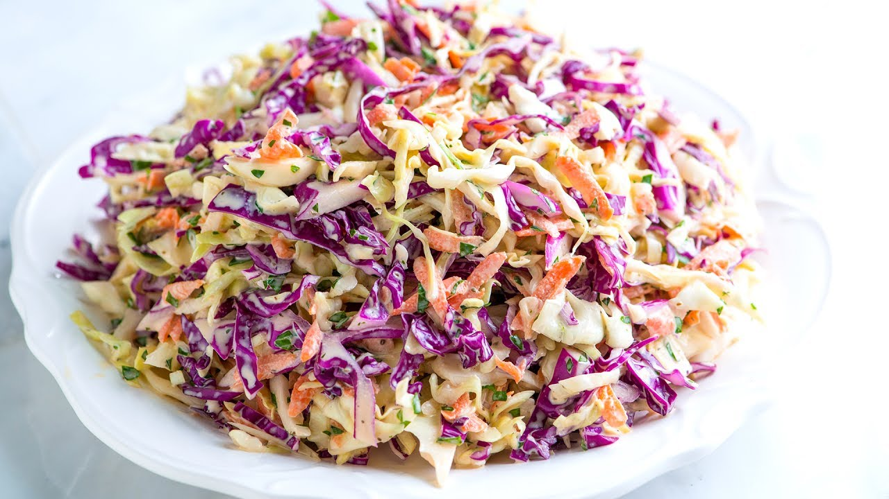
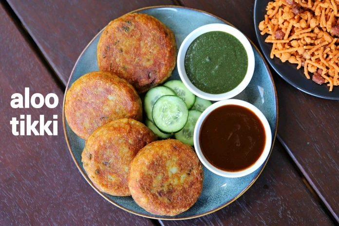

Vegetarian Recepies
Gulab Jamun
It is a sweet indian dessert recipe prepared with milk powder and sugar syrup.It is also served with vanilla ice cream which makes it cold and hot sweet dessert recipe.
...
Instructions:
Firstly in a large mixing bowl take milk powder.
Further, to that add maida and rava.
Then add pinch of baking soda
also add ghee, lemon juice and crumble well.
Slowly add milk little by little and knead well.
Knead to a smooth and soft dough.
Furthermore, make small balls greasing ghee to hands.
Make sure there are no cracks on balls. else there are chances for gulab jamun to break while frying.
Heat the ghee on low flame and when the ghee is moderately hot, fry the jamuns.
Fry the balls on low flame stirring in between.
Fry till the balls turns golden brown.
Immediately, drop the hot jamuns into hot sugar syrup.
Cover the lid and rest for 2 hours. flame should be turned off.
Finally, the jamuns have doubled in size.

Coleslaw
Coleslaw, also known as cole slaw or simply slaw, is a side dish consisting primarily of finely shredded raw cabbage with a salad dressing, commonly either vinaigrette or mayonnaise.
...
Instructions:
Fit a food processor with the thickest slicing blade. Cut the cabbages into small wedges and place horizontally into the feed tube.
Process in batches.
Next, fit the food processor with the grating blade.
Cut the carrots in half and place in the feed tube so they are lying on their sides. Process in batches and mix in a bowl with the grated cabbages.
In a medium bowl, whisk together the mayonnaise, mustard, sugar, vinegar, celery seeds, celery salt, salt, and pepper.
Pour enough of the dressing over the grated vegetables to moisten them.
Serve cold or at room temperature.

Aloo Tikki
The potato-based tikki is the foundation for many recipes like sandwich, burger, street food and many chaat recipes.Having said that the dish can be served as it is with simple sides and condiments like green chutney or tamarind chutney as party starters.
...
Instructions:
Firstly, in a large mixing bowl take 3 boiled and grated potato. Make sure to pressure cook potatoes for 4-5 whistles and drain off the water as soon as pressure releases.
Add 1 chilli, 1 tsp ginger garlic paste, ¼ tsp turmeric and ½ tsp chilli powder.
Also add ½ tsp cumin powder, ½ tsp aamchur, ½ tsp chaat masala and ½ tsp salt.
Further add 2 tbsp mint and 2 tbsp coriander.
Now add 2 tbsp cornflour and mix well alternatively use poha powder or rice flour as it helps to absorb moisture.
Mix well forming a soft dough.
Grease hand with oil and prepare ball-sized tikki.
Shallow fry in hot oil. you can alternatively roast or deep fry.
Roast on low flame until it turns golden brown.
Flip over and cook on both sides.
Finally, enjoy aloo tikki with green chutney, tamarind chutney or prepare aloo tikki chaat.
